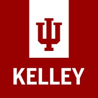
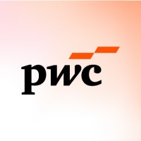
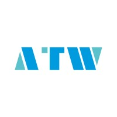
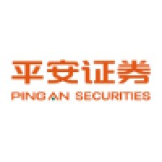
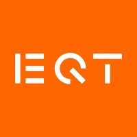
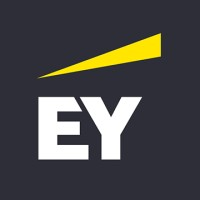

Zixiao Xu徐子骁
M.S. Applied Analytics @ Columbia · Finance × Data 哥伦比亚大学应用分析硕士在读 · 金融 × 数据分析
About关于我
I'm pursuing an M.S. in Applied Analytics at Columbia University, after earning a B.S. in Business (Finance & Information Systems) from Indiana University's Kelley School of Business.
My internships span private equity, investment banking, management consulting, and corporate finance. I'm interested in combining financial analysis with data and technology to help companies make better decisions.
我目前在哥伦比亚大学攻读应用分析硕士，本科毕业于印第安纳大学凯利商学院，主修金融与信息系统。
实习经历覆盖私募股权、投资银行、管理咨询和企业财务。我希望把金融分析和数据、技术工具结合起来，帮企业做出更好的决策。
Education教育
-
Columbia University哥伦比亚大学 · New York, NY· 纽约Sep 2025 – Dec 20262025.09 — 2026.12M.S. in Applied Analytics 应用分析 硕士
Applied Machine Learning, Business Analysis, Python for Data Analysis, Corporate Strategy and Analysis 应用机器学习、商业分析、Python 数据分析、企业战略与分析
-

Indiana University Bloomington印第安纳大学伯明顿分校 · Bloomington, IN· 印第安纳州伯明顿Aug 2021 – May 20252021.08 — 2025.05Kelley School of Business凯利商学院B.S. in Business, Finance & Information Systems 金融 & 信息系统 双专业 本科Equity and Fixed Income Investments, Intermediate Corporate Finance, Intermediate Investments, Financial Reporting 股权与固定收益投资、中级公司金融、中级投资学、财务报告
Experience实习经历
-

PwC Management Consulting (Shanghai)普华永道管理咨询（上海） Jul 2026 – Sep 20262026.07 — 2026.09Summer Intern, Enterprise Applications Consulting企业咨询部 · 暑期实习生Supported the digital transformation of a leading Chinese aviation manufacturer: process and operating-model analysis, digital solution design, and competitor benchmarking. 参与一家领先航空制造企业的数字化转型项目，负责业务流程分析、数字化方案设计和竞品研究。
-

Wuxi Autowell Technology无锡奥特维科技 Jul 2025 – Aug 20252025.07 — 2025.08Summer Intern, Accounting财务部 · 暑期实习生Supported the H1 2025 performance review, flagged key divisional risks, and proposed AI-enabled dynamic budgeting and gross margin forecasting. 参与集团 2025 年上半年经营分析，梳理核心风险点，并提出用 AI 工具优化动态预算和毛利预测的建议。
-

Ping An Securities平安证券 Jun 2025 – Jul 20252025.06 — 2025.07TMT Summer Analyst, Investment Banking投资银行事业部 TMT 组 · 暑期分析师Helped draft IPO prospectuses and equity financing proposals; worked across IPOs, follow-on offerings, and convertible bonds. 参与招股说明书和融资方案的编写，接触 IPO、再融资、可转债等股权融资工具。
-

EQT Private Capital Asia Jun 2024 – Aug 20242024.06 — 2024.08Summer Analyst, Private Equity私募部 · 暑期分析师Evaluated 10+ TMT and healthcare targets, benchmarked companies in liquid cooling & storage, and supported post-acquisition work for Hydron Contact Lenses. 评估了 10 余家 TMT 和医疗健康行业的潜在标的，完成液冷与存储赛道的对标研究，并参与海昌隐形眼镜的投后工作。
-

Ernst & Young (China) Advisory安永（中国）咨询 Jul 2023 – Aug 20232023.07 — 2023.08Summer Intern, SAP FICO Consulting科技咨询部 · SAP FICO 实习生Supported an SAP implementation for SP Chemicals: requirements gathering, system configuration, and unit/integration/UAT testing. 参与新浦化学 SAP 系统上线，负责需求分析、系统配置和单元、集成、用户验收测试。
-
China Industrial Bank, Wuxi Branch兴业银行无锡分行 Jun 2023 – Jul 20232023.06 — 2023.07Summer Analyst, Investment Banking投行部 · 暑期实习生
Supported convertible bond financing and M&A transactions; conducted project evaluations, valuations, and due diligence, gaining an understanding of different financing tools and transaction structures. 参与可转债融资和并购项目，进行项目评估、估值和尽职调查，了解了不同的融资工具和交易结构。
Projects项目
Equity Portfolio Optimization & Risk-Return Analysis多资产投资组合与风险收益分析
Built the efficient frontier and Capital Allocation Line from 10 years of data on 10 stocks, comparing results with and without short-selling constraints. 基于 10 只股票 10 年历史数据，构建有效前沿和资本配置线，并对比有无卖空限制下的组合表现。
WD-40 Leveraged Buyout AnalysisWD-40 杠杆收购（LBO）分析
Two-stage APV model valuing the levered firm at $3.85B (+19.6% vs. unlevered); designed a $3.3B offer and full financing structure. 用 APV 法搭建两阶段估值模型，杠杆后估值 38.5 亿美元（比无杠杆高 19.6%），并设计 33 亿美元报价和完整融资结构。
Capital Budgeting Risk Analysis资本预算风险分析
Built an FCF model for a 5-year project and used scenario and two-way sensitivity analysis to identify the key NPV drivers. 为一个 5 年期项目搭建自由现金流模型，通过情景分析和双变量敏感性分析，找出影响 NPV 的关键因素。
Skills技能
Interests兴趣爱好
Basketball, photography, hiking, swimming, snowboarding, guitar, and the Chinese bamboo flute (Grade 8). 篮球、摄影、徒步、游泳、滑雪、吉他，竹笛八级。